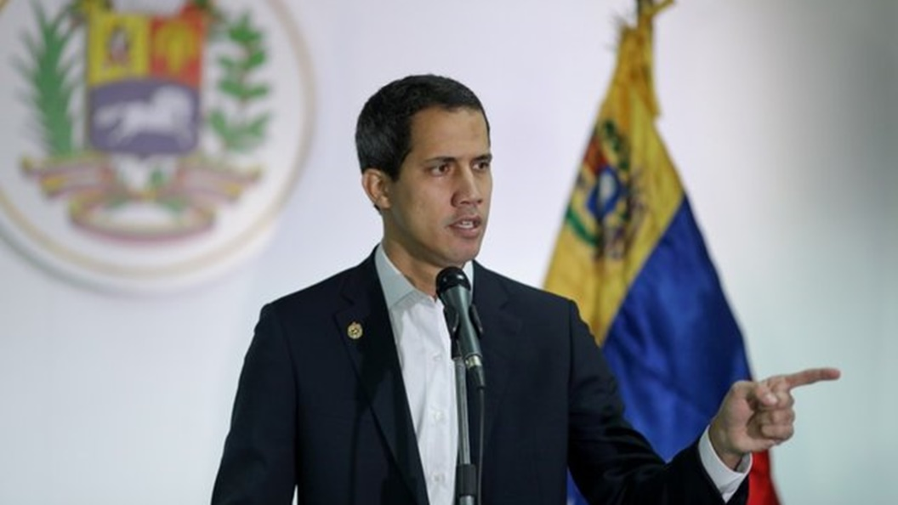
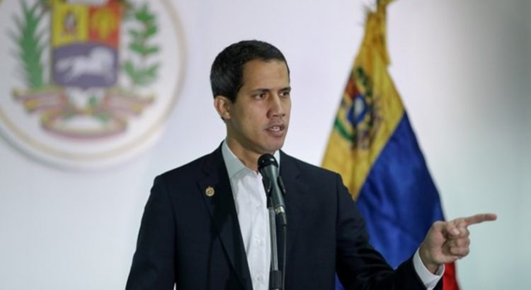
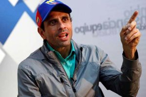
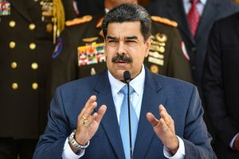

Venezuela — Capriles Says Guaido has Failed

Former Venezuelan opposition presidential candidate Henrique Capriles has called for the disbandment of the country’s interim government.Speaking to the BBC about the country’s crestfallen state of affairs, Capriles has said that there is no need for the interim government, which was set up in 2019, to continue to exist.
According to the politician, the opposition has already failed in its endeavor to implement its original agenda.It also lost in the most recent elections, indicating a lack of political sway.
'The new administration should understand that this plan has been exhausted and (it) cannot give continuity to the status quo: the interim government,' he said.
Venezuelan President Nicolas Maduro claimed electoral victory following the December 6 elections.His party also secured a majority in the National Assembly.
The win came after opposition leader, Juan Guaido, asked the citizenry, as well as his political supporters, to boycott the national vote.The move led to Maduro facing little competition.
Taking over the National Assembly ultimately undercuts Guaido’s power.The opposition leader, who is backed by over 50 nations, including the United States, drew his legitimacy from the legislative body.It designated him the interim head of state in 2019.
For two years now, Guaido has made numerous attempts to wrest power from Maduro.The despotic president has, however, clung to power.He is succored by the national military, which is a formidable force.Without the support of security forces, Guaido’s political influence has continued to wane over the years, causing disillusionment amongst his followers.
Maduro’s victory comes just as US President Donald Trump’s term comes to an end.His administration made concerted efforts to bring him down.It imposed devastating economic sanctions targeting his inner circle, as well as lucrative state-owned organizations, such as PDVSA, the national oil company.
In light of the latest political triumph, Maduro dubbed it a victory for democracy, stating, 'we have recovered the National Assembly with the majority vote of the Venezuelan people.It’s a great victory without a doubt for democracy.'
The United Socialist Party of Venezuela, led by the president, captured 67 percent of the seats in the National Assembly.That said, only 31% of the country’s 20 million registered voters took part in the election.The low turnout underlined the frustration felt by Venezuelans, who have to endure poor governance and systemic corruption.
The elections were, however, largely peaceful, with civilian militia as well as security agents keeping vigil at the polling stations.
Guaido’s Referendum
Following his political defeat, Juan Guaido announced a nationwide referendum.The event, which was held on Monday, was set up as a platform to get the people’s opinion on whether they want Maduro’s rule to continue or not.
'Although I cannot promise a magic solution today, I can tell you with certainty and security: You are not alone.We will not give up.We are going to give everything until we win,' Guaido said.
US Secretary of State Mike Pompeo supported the move, while describing the latest elections as a sham aimed at fastening Maduro’s hold on power.
Despite the intense political saber-rattling, independent polls held in the recent past suggest that neither Maduro nor Guaido is a political favorite among most Venezuelans.Both have, over the past year, struggled to gain an approval rating of over 20 percent.
[bsa_pro_ad_space id=4]
Share on Facebook Tweet Follow us
Posted On: 2020-12-11T00:00:00
Posted By: Samuel Gush






Content Date: 2020-12-11
Download Date: 2021-07-09
Document ID: L0C04ECMB